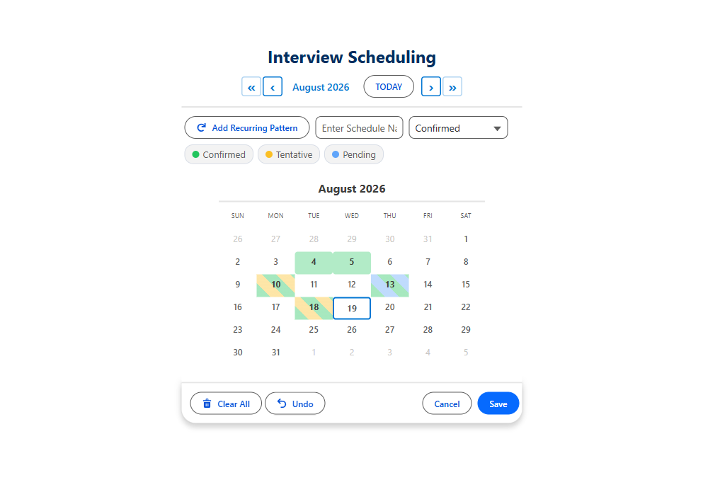

Interview Scheduling on a Salesforce Calendar
Offer real interview slots, catch the double-booking before it happens, and save the result straight into Salesforce. No back-and-forth email, no third-party scheduler, no code.
Interview scheduling breaks in the same place every time: the person booking cannot see who is already busy. So the slot gets offered, the candidate accepts, and somebody discovers the clash a day later. A Salesforce calendar that knows about existing bookings closes that gap at the point of selection.
What makes interview scheduling different
Dates and times together
An interview is not a date, it is a date plus a time window. Pick both on one screen, in 15, 30, or 60 minute slots.
The interviewer is a resource
Choose the interviewer or panel from a resource picker, and pull their available hours from their own record.
Conflicts are decided at save
Overlaps can block the save, skip just the clashing slot, or be allowed on purpose. You choose the behavior.
Panels need capacity
Three interviewers in one slot is a capacity problem, not a conflict. Capacity mode counts them and closes the slot when it is full.

What changes
| Interview coordination task | Standard Salesforce today | With MultiDatePick |
|---|---|---|
| Offer the candidate three slots | Typed into an email from memory | Picked from a live grid that already excludes taken slots |
| Check the interviewer is free | Open their calendar in another tab and hope | Their existing bookings are drawn on the grid |
| Two coordinators booking at once | Last write wins, nobody notices | Conflict detection runs on save and reports the clash |
| Panel of three for one slot | Three separate records, no shared view | Capacity mode with a live X/Y badge on the slot |
| Candidate needs to move the interview | Delete and recreate, by hand | Edit mode: change date, time, or interviewer inline |
Let the candidate book it themselves
The same component runs on an Experience Cloud site, so you can send a candidate a link and let them pick from the slots you are actually willing to offer. Business hours come from the interviewer record, blocked dates come from wherever you already store them, and the booking lands in your org as a normal record the moment they click save.

Or drive it from a Screen Flow
If interview scheduling already lives inside a recruiting flow, the calendar goes in the flow. The selection comes back as selectedDatesWithTimesJson, conflicts come back as bookingConflictDates, and the flow decides what to do next: send the invite, update the submittal, notify the panel.
The configuration, in full
Point these at your own objects. The names below are an example schema, and none of it is code.
| relatedObjectApiName | Interview__c |
| relationshipFieldApiName | Candidate__c |
| dateFieldApiName | Interview_Date__c |
| bookingStartTimeField bookingEndTimeField | Start_Time__c / End_Time__c |
| resourceObjectApiName | Interviewer__c — or a panel record, if several people sit in |
| bookingResourceField | Interviewer__c on the interview |
| businessHoursStartField businessHoursEndField | on the interviewer, so each person's availability window is their own |
| timeInterval | 45 — interviews rarely fit a 30-minute grid |
| groupTimeSlotsByPeriod | true — morning / afternoon / evening, so a dense day stays scannable |
| conflictBehavior | block to refuse a clash outright, skip to save the free slots and report the rest |
| capacityField | only if a slot takes several interviewers. A panel of three is a capacity question, not a conflict |
| enableEditMode | true — reschedule and reassign without deleting |
block is right when every slot is deliberate. skip is the humane default when someone selects several dates at once and two happen to clash: the other ones still save, and bookingConflictDates tells the flow exactly which did not.| recordId | the candidate record, from a flow variable |
| Outputs | selectedDatesWithTimesJson for the slots picked, bookingSuccessCount and bookingConflictDates for what actually saved |
| Parser | the MultiDatePickParser invocable action turns that JSON into a loopable collection with fromDate, startTime, endTime, resourceId |
$GlobalConstant.True / False (a blank Boolean is null, not false). The Copy Flow XML button on the config library does this for you.Interviews belong in the week grid
An interview is a time-of-day problem, and the month grid is the one layout that hides times. Set view to week and you get seven days across with your business hours down the side, each interview drawn as a block the height of its actual duration. A single drag across two days and down three hours blocks out a panel day.
Keep calendar in availableViews for the coordinator who thinks in weeks-out, and add agenda for the morning-of list: a flat chronological run of the day with candidate, round and status, which reads well on a phone on the way to the room.
Stop scheduling interviews in your inbox
Coming to the Salesforce AppExchange in 2026. Tell us where to send the launch note.
100% Salesforce native. Your data and your configuration never leave your org.